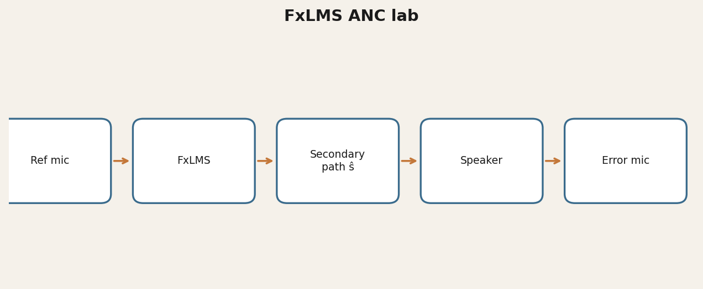

Problem
Speaker-mode ANC is latency-bound; marketing claims often ignore secondary-path delay and quiet-zone physics.
Approach
Offline FxLMS simulation, WASAPI IR measurement, and documented realtime experiments — protocols before “AI magic.”
Results
- Secondary-path peak ≈ 43.7 ms @ 48 kHz on the laptop bench (one IR capture)
- Science and hardware notes under
docs/
Non-commercial research license. Not a shipping consumer product.